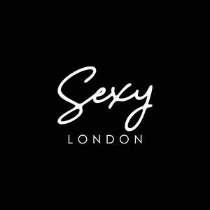

Trade Mark Journal No.2026/008 20 February 2026
UK00004336549 6 February 2026 (25,35)

- Class 25
- Clothing; Casual clothing; Sweatshirts; Hooded sweatshirts; Trousers; Leggings [trousers]; Skirts; Footwear; Casual footwear; Jeans; T-shirts; Sweatpants; Shirts; Shorts; Trainers [footwear]; Blazers; Running shoes; Leather shoes; Canvas shoes; Shoes; Sandals; Jackets; Suede jackets; Denim jackets; Leather jackets; Padded jackets; Casual jackets; Fur jackets; Headgear; Beanies; Caps; Belts [clothing]; Scarfs; Underwear; Boxer shorts; Baseball caps and hats; Socks; Sports socks; Ankle socks; Polo shirts; Bomber jackets; Chinos; Cardigans; Long sleeve T-shirts; Long sleeve polo shirts; Long topcoats; Long overcoats; Flip flops; Sliders [sandals]; Slippers.
- Class 35
- Retail and wholesale services in relation to clothing, casual clothing, sweatshirts, hooded sweatshirts, trousers, leggings [trousers], skirts, footwear, casual footwear, jeans, t-shirts, sweatpants, shirts, shorts, trainers [footwear], blazers, running shoes, leather shoes, canvas shoes, shoes, sandals, jackets, suede jackets, denim jackets, leather jackets, padded jackets, casual jackets, fur jackets, headgear, beanies, caps, belts [clothing], scarfs, underwear, boxer shorts, baseball caps and hats, socks, sports socks, ankle socks, polo shirts, bomber jackets, chinos, cardigans, long sleeve t-shirts, long sleeve polo shirts, long topcoats, long overcoats, flip flops, sliders [sandals], slippers. .
Sexy Coffee Ltd
Representative: Harper Macleod LLP